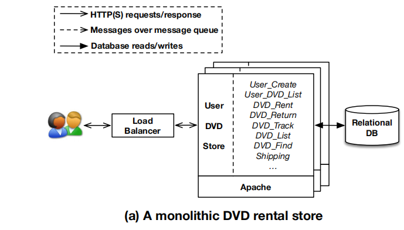
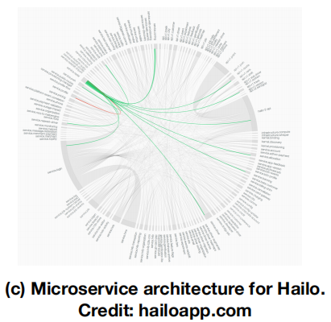

学术论文的价值体现在学术价值或者应用价值。
学术论文中的实验验证分为1.正确性验证；2.实例化验证；3.优化验证（对比前人已有方法）三种。
Abstract
Microservice architecture allows different parts of an application to be developed, deployed and scaled independently, therefore becoming a trend for developing cloud applications.
微服务架构使得我们能够独立地开发、部署和拓展一个应用中的不同部分，因而成为云应用开发的主流。
However, it comes with challenging security issues.
然而，安全问题的挑战随之而来。
First, the network complexity introduced by the large number of microservices greatly increases the difficulty in monitoring the security of the entire application.
首先，大量微服务带来的网络复杂度使得监控整个应用的安全性的难度大大增加。
Second, microservices are often designed to completely trust each other, therefore compromise of a single microservice may bring down the entire application.
第二，微服务设计为是相互之间完全信任的，所以存在单个微服务出现问题导致整体应用出现问题。
The problems are only exacerbated by the cloud, since applications no longer have complete control over their networks.
由于应用对网络不再有完全的操控能力，因此云是加剧该问题的唯一因素。
In this paper, we propose a design for security-as-a-service for microservices-based cloud applications.
本文提出了“安全即服务”设计理念用于基于微服务的云应用。
By adding a new API primitive FlowTap for the network hypervisor, we build a flexible monitoring and policy enforcement infrastructure for network traffic to secure cloud applications.
借助在网络监控器中添加一个全新的“水龙头“API, 本文于网络流量中构建了一个灵活的监控和策略执行机构来保证云应用的安全。
We demonstrate the effectiveness of our solution by deploying the Bro network monitor using FlowTap.
通过使用”水龙头“构建一个兄弟网络监控，我们证明了方案的有效性。
Results show that our solution is flexible enough to support various kinds of monitoring scenarios and policies and it incurs minimal overhead(~6%) for real world usage.
结果显示，此方案足够灵活支持各种监控情景和策略，在现实使用中产生的最小开销为6%。
As a result, cloud applications can leverage our solution to deploy network security monitors to flexibly detect and block threats both external and internal to their network.
所以，将我们的方案部署在云应用网络安全监控器上，可以从外部和内部灵活检测和阻碍威胁。
Keywords: microservices 微服务； network monitoring 网络监控； security 安全；
Introduction
There are multiple trends that are forcing modern cloud applications to evolve.
Users expect rich, interactive, and dynamic user experience on a wide variety of client devices.
Applications must be highly scalable, highly available, and must run on cloud environments.
Organizations want to roll out frequent update - sometimes, even multiple times a day.
Consequently, it is no longer adequate to develop monolithic web applications.
The predominant way to address this problem today is to use an alternate architecture - known as microservices architecture - that decomposes a monolithic application into a set of narrowly focussed, independently deployable services, called microservices.
The popularity of this architecture is evident from the report by the popular jobs portal indeed.com that the number of job openings on microservices-related technologies, such as JSON and REST, has grown more than 100 fold in the last six years, whereas jobs in similar technology areas like SOAP and XML have stayed nearly identical.
The microservices architecture, due to its new design paradigm, introduces two major security challenges.
First, the microservices design creates many smaller applications interacting among themselves that results in complex network-activity.
This makes monitoring and securing networks for the overall application and individual microservices very challenging.
Second, the trusted computing base(TCB) for cloud applications usually includes all of the component microservices and compromise of one could result in the entire application’s compromise.
It gets even more challenging in the public cloud environment where the application administrator has limited access to the application network.
One way to address these chellenges is to leverage the software defined networking (SDN) capabilities provided by modern cloud networking and program the networks in a way that monitors the complex network interactions and enforces policies on them.
For example, SDN provides the ability to scan through network packets at every forwarding element and control the forwarding as per the application requirements.
This also allows to control the granularity of the network flows(while processing) and even changing them dynamically based on attact patterns and application behaviors.
It also allows for passive monitoring (e.g. via copy-and-forward) and active rerouting (e.g. via changing the forwarding destination) that can be leveraged based on security requirements.
In this paper, we propose the design, development, and evaluation of a security-as-service infrastructure for microservices-based cloud applications.
We propose a cloud-based network security framework that helps cloud application administrators/providers to construct a global view of their application, even when its components are distributed throughout the cloud.
The framework also enables application providers/administrators to flexibly implement their own security control over its services, thus preventing a compromised service from compromising the rest of the application or the cloud platform/hypervisor.
Our design is motivated by the micro-kernel design, where a security kernel monitors and mediates security critical operations performed by “server” (aka services) running atop, effectively removing the services from the TCB of the application.
Background and Problem
In this section, we illustrate microservice architecture with an example application – an online DVD rental store, and discuss security challenges of this design paradigm.
该部分中，使用一个在线 DVD 出租平台应用实例来说明微服务体系结构，并讨论这种设计模式的安全挑战。
Other applications will have different service decomposition and interaction model but the challenges are similar.
虽然其他应用会有不同的服务组成和交互模型但是挑战类型是类似的。
A. Microservice Architecture
Microservice architecture decomposes an application into a set of narrowly focused and independently deployable services, a.k.a. microservices, which may communicate among themselves using lightweight mechanisms, such as REST APIs.
微服务体系结构把应用分解为一系列专注于实现某一小部分功能的，可独立部署的服务，即微服务。这些微服务之间可以通过轻量化的机制，如 REST(REpresentation State Transfer) API 相互通信。
Some examples of popular online services using this design include Netflix, Ebay, and Gilt.
目前一些使用这种设计的在线服务的例子包括 Netflix, Ebay, Gilt(打折购物网上平台)
In contract, traditional internet applications are often designed using a three-tier model with a monolithic application implementing all of the business logic, as shown in Figure 1(a).
作为对比，传统的互联网应用通常设计为三层模式，在单个应用处理所有业务逻辑，如图1(a)所示。

In this example, all the logic for renting DVDs runs in a single process and is developed as a single executable(i.e. a WAR file).
在这个例子中，所有租赁 DVD 的逻辑在单一进程中运行并且部署为一个单一可执行文件（即一个 WAR 文件）。
For scalability, multiple application instances are deployed horizontally behind a load-balancer.
考虑到规模的拓展，多个应用实例平行地部署在一个负载均衡器后。
There are three problems with monolithic applications.
单个应用存在三个问题。
First, different components of the application have different scaling requirements – for instance, creating new customers is less frequent than customers renting DVDs.
第一，应用中的不同部分有不同规模要求 – 比如，消费者租借DVD的操作比新建消费者用户的操作要频繁许多。
However, scaling a monolithic application requires the entire application to be replicated, which requires greater resources.
然而，扩大单一应用的规模使整个应用重复性地扩大，这会消耗更大的资源。
Second, monolithic architecture often meeans technology lock-in – it is difficult for application components to evolve separately and adopt new technologies (e.g. new databases, new programming languages).
第二，单个的体系结构通常意味着技术的封闭 – 独立升级和采用新的技术（如新的数据库和新的编程语言）对于应用各部分来说是比较难的。
Moreover, a small change made to the application requires the entire application to be re-built.
第三，对应用的一个小的改动会使得整个应用重新构建。
Finally, as the application becomes more complex, it is often difficult to separate out DevOps responsibilities, which results in slow development and deployment.
最后，随着应用变得更加复杂，通常难以对开发与运维的责任进行拆分，导致了开发与部署缓慢。
Microservice architecture addresses these problems by decomposing a complex monolithic application into a set of small and autonomous services that work together.
微服务体系架构解决这些问题通过将一个复杂的单个应用分解为能自动化执行的小服务的集合。
In Figure 1(b), the DVD rental application is broken into many small and decoupled tasks, and each task is
在图 1(b) 中，DVD 租借应用分为许多小的任务集合。并且每个任务由一个小的服务来实现。
This decomposition allows different services to be built, deployed, managed, and scaled independently.
这种分解允许不同的服务独立地构建、部署、管理和扩大规模。
During this decomposition, all the function calls across components are replaced by inter-service communications that are implemented via well-defined API interfaces, as illustrated in the Figure 1(b) using connections.
在此分解过程中，各部件之间的函数调用被服务间通信的 API 实现所替代，如图 1(b) ，使用连接线来表示。
B. Security Issues
Microservice architecture does not make an application any simpler, it only distributes the application logic into multiple smaller components, resulting in a much more complex network interaction model between components, which is evident even in this simplified example in Figure 1(b).
即使从图 1(b) 这个精简的例子中也可以发现，微服务对于简化应用没有丝毫帮助，它所起的作用是将单个应用的逻辑分布到多个小的部件中去，这会产生一个更加复杂的网络交互模型。
When a real world application is decomposed, it can easily create hundreds of microservices, as seen in the architecture overview of Hailo, an online cab reservation application, depicted in Figure 1(c).
当一个现实世界应用被分解时，很容易就能产生数以百计的微服务，如图 1(c) 中的在线打车应用 Hailo 所示。

Around the circle are microservices and the lines are the communications between them.
圆圈是微服务，
Comments
shortnamefor Disqus. Please set it in_config.yml.